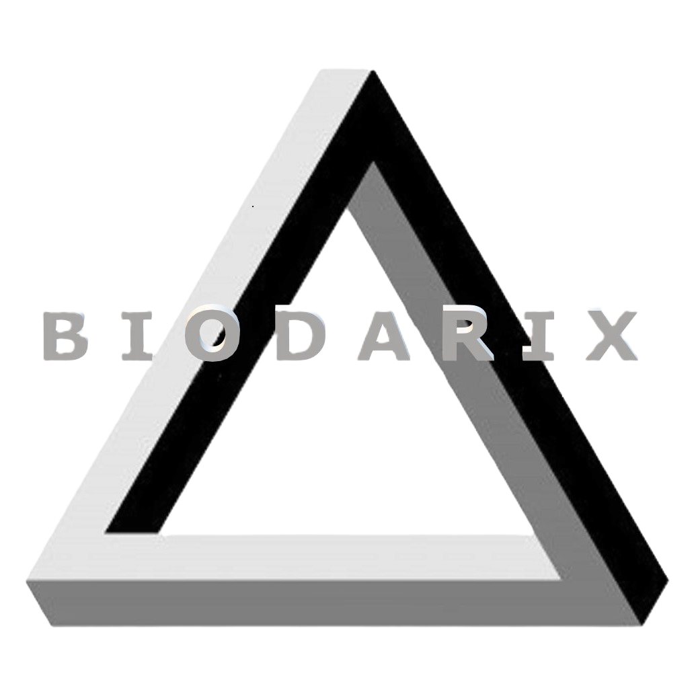

	<!-- Navbar Section Start -->
	<nav class="navbar navbar-dark navbar-expand-lg"  uk-sticky="top:100; animation: uk-animation-slide-top; bottom: #sticky-on-scroll-up">
		<div class="container">
			<a href="index.html" class="navbar-brand">
				
				<div class="ml-2 p-0 d-inline webT">Biodarix Lifesciences</div>
			</a>
			<button class="navbar-toggler navbar-toggler-right" data-toggle="collapse" data-target="#navBar">
				<span class="navbar-toggler-icon"></span>
			</button>
			<div class="collapse navbar-collapse" id="navBar">
				<ul class="navbar-nav  ml-auto ">

					<li class="nav-item active">
						<a class="nav-link " href="index.html">Home</a>
					</li>
					<li class="nav-item">
						<a class="nav-link" href="about.html">About</a>
					</li>
					<li class="nav-item">
						<a class="nav-link" href="services.html">Services</a>
					</li>
					<li class="nav-item">
						<a class="nav-link" href="blog.html">Blog</a>
					</li>
					<li class="nav-item">
						<a class="nav-link" href="contact.html">Contact</a>
					</li>
				</ul>
			</div>
		</div>
	</nav>
	<!-- Nav Section End -->
